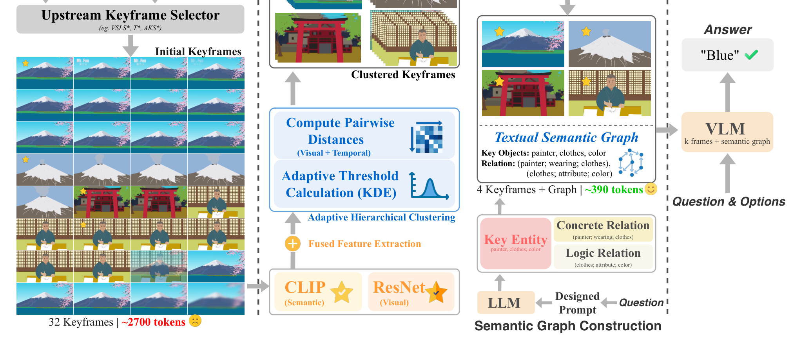

The practical application of Multimodal Large Language Models (MLLMs) to Video Question Answering (Video-QA) is severely hindered by the high token cost of processing numerous video frames. While keyframe selection is the dominant strategy for mitigating this, we identify a critical flaw: even state-of-the-art selectors produce prompts suffering from significant temporal redundancy, a challenge unique to video that we term “visual echoes”. This issue leads to context dilution and can paradoxically degrade performance. To address this dual challenge, we propose a novel refinement framework that synergistically combines Adaptive Frame-Pruning (AFP) with a lightweight text-based semantic graph. AFP intelligently prunes “visual echoes” by adaptively clustering frames, while the semantic graph provides crucial, low-cost semantic compensation. Conducting extensive experiments on the LongVideoBench and Video-MME benchmarks against multiple state-of-the-art selectors, our approach demonstrates a drastic reduction in total input tokens by up to 82.2%. Crucially, by creating a concise, high-quality prompt, our framework not only enhances efficiency but also demonstrates a remarkable ability to robustify and improve the accuracy of upstream selectors, achieving results that are highly competitive with, and often superior to, baselines that use vastly more frames.
Our framework is a universal refinement module that sits after any upstream keyframe selector (e.g., AKS, TStar, VSLS). It refines the selector’s output through two complementary stages:

Adaptively clusters frames and keeps one representative per cluster, collapsing temporally redundant “visual echoes” into a compact, non-redundant set.
Injects a lightweight, text-attributed semantic graph directly into the prompt — no GNN required — restoring relational cues at minimal token cost.
Inside AFP — three steps:
32 frames → 4 frames).
Why “less is more”. By removing visual echoes, AFP directly counters context dilution: the MLLM is no longer distracted by many near-identical frames, so the semantic graph’s compensation and the remaining representative frames carry more signal per token — reducing tokens by up to 82.2% while robustifying and improving upstream selectors.
We formally define and demonstrate the prevalence of “visual echoes” in video, attributing the “less is more” paradox in Video-QA to this redundancy and to context dilution.
A two-pronged framework combining AFP with a lightweight text-based semantic graph — a plug-and-play layer for any upstream keyframe selector.
Across LongVideoBench and Video-MME, over multiple backbones and selectors, we drastically cut token cost while frequently improving accuracy.
Off-the-shelf encoders, no fine-tuning, a single non-iterative refinement pass — negligible overhead, drastically lower visual token load.
Evaluated across backbones including GPT-4o and Qwen2.5-VL-7B, on top of upstream selectors such as AKS, TStar, and VSLS. See the paper for full comparisons, ablations, and efficiency analysis.
@inproceedings{wang2026lessismore,
title = {Less is More: Token-Efficient Video-QA via Adaptive Frame-Pruning and Semantic Graph Integration},
author = {Wang, Shaoguang and Guo, Weiyu and Chen, Ziyang and Xu, Yijie and Hu, Xuming and Xiong, Hui},
booktitle = {Proceedings of the IEEE/CVF Conference on Computer Vision and Pattern Recognition (CVPR) Findings},
year = {2026}
}